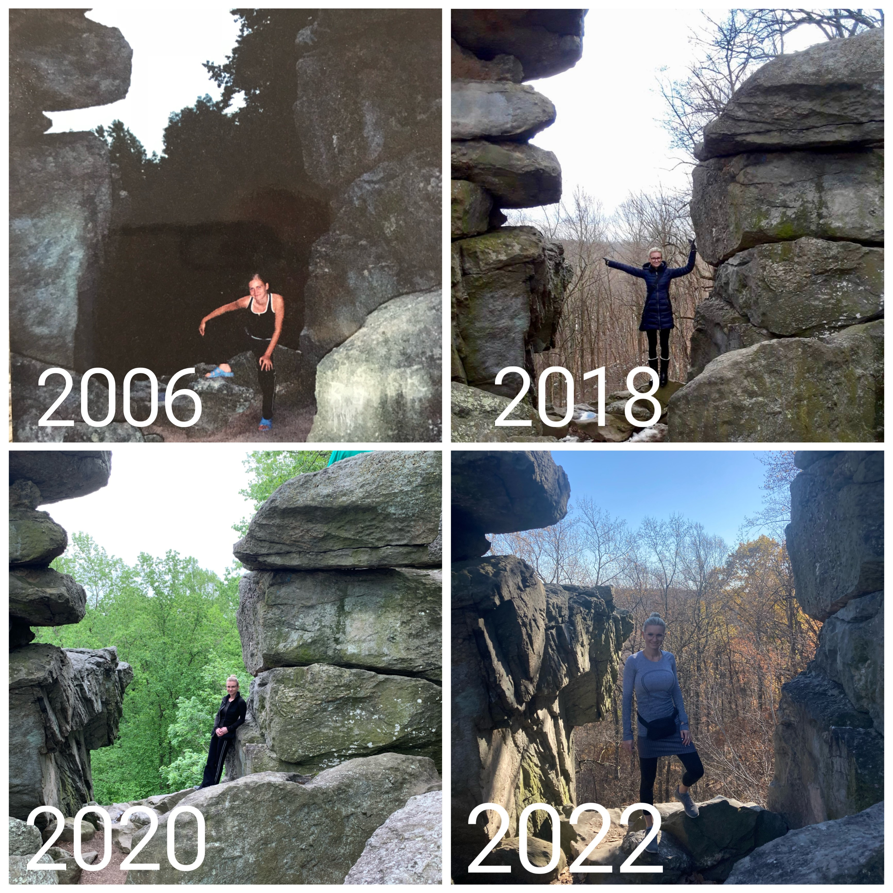

One of my favorite things to do is Hiking. Hiking is a great social activity. My most-liked trail is "King and Queens Seat Loop", located in Rocks State Park. I was introduced to this trail when I just came to US, and ever since I try to hike this trail every couple years.
